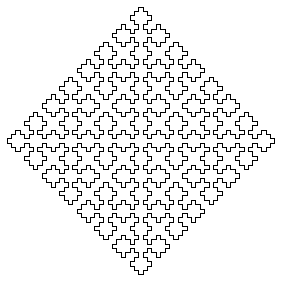

L-Systems
A Gallery of L-Systems
axiom: F+xF+F+xF
production rule: x -> xF-F+F-xF+F+xF-F+F-x

axiom: F+F+F+F
production rule: F -> FF+F+F+F+F+F-F
axiom: F+F+F+F
production rule: F -> FF+F++F+F
axiom: F+F+F+F
production rule: F -> FF+F+F+F+FF
Return to
L-Systems
.